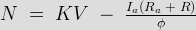

• Armature Control
• Field Control of
Speed Control of DC Shunt Motor
• Field Control
• Armature Control
Speed control means intentional change of the drive speed to a value required for performing the specific work process. Speed control is a different concept from speed regulation where there is natural change in speed due change in load on the shaft. Speed control is either done manually by the operator or by means of some automatic control device.
One of the important features of dc motor is that its speed can be controlled with relative ease. We know that the expression of speed control dc motor is given as,

Therefore speed (N ) of 3 types of dc motor – SERIES, SHUNT AND COMPOUND can be controlled by changing the quantities on RHS of the expression. So speed can be varied by changing
(i) terminal voltage of the armature V ,
(ii) external resistance in armature circuit R and
(iii) flux per pole φ .
The first two cases involve change that affects armature circuit and the third one involves change in magnetic field. Therefore speed control of dc motor is classified as
1) armature control methods and
2) field control methods.
Speed Control of DC Series Motor
Speed control of dc series motor can be done either by armature control or by field control.
Armature Control of DC Series Motor
Speed adjustment of dc series motor by armature control may be done by any one of the methods that follow,
1. Armature resistance control method: This is the most common method employed. Here the controlling resistance is connected directly in series with the supply to the motor as shown in the fig.
diagram
The power loss in the control resistance of dc series motor can be neglected because this control method is utilized for a large portion of time for reducing the speed under light load condition. This method of speed control is most economical for constant torque. This method of speed control is employed for dc series motor driving cranes, hoists, trains etc.
2. Shunted armature control: The combination of a rheostat shunting the armature and a rheostat in series with the armature is involved in this method of speed control. The voltage applied to the armature is varies by varying series rheostat R 1. The exciting electric current can be varied by varying the armature shunting resistance R2. This method of speed control is not economical due to considerable power losses in speed controlling resistances. Here speed control is obtained over wide range but below normal speed.
Diagram :
3. Armature terminal voltage control: The speed control of dc series motor can be accomplished by supplying the power to the motor from a separate variable voltage supply. This method involves high cost so it rarely used.
Field Control of DC Series Motor
The speed of dc motor can be controlled by this method by any one of the following ways –
1. Field diverter method: This method uses a diverter. Here the field flux can be reduced by shunting a portion of motor electric current around the series field. Lesser the diverter resistance less is the field current, less flux therefore more speed. This method gives speed above normal and the method is used in electric drives in which speed should rise sharply as soon as load is decreased.diagram
2. Tapped Field control: This is another method of increasing the speed by reducing the flux and it is done by lowering number of turns of field winding through which electric current flows. In this method a number of tapping from field winding are brought outside . This method is employed in electric traction.
Diagram
Speed Control of DC Shunt Motor
Speed of dc shunt motor is controlled by the factors stated below
Field Control of DC Shunt Motor
By this method speed control is obtained by any one of the following means –
1. Field rheostat control of DC Shunt Motor: In this method , speed variation is accomplished by means of a variable resistance inserted in series with the shunt field . An increase in controlling resistances reduces the field electric current with a reduction in flux and an increase in speed. This method of speed control is independent of load on the motor. Power wasted in controlling resistance is very less as field electric current is a small value. This method of speed control is also used in DC compound motor.
Limitations of this method of speed control:
A. Creeping speeds cannot be obtained.
B. Top speeds only obtained at reduced torque
C. The speed is maximum at minimum value of flux, which is governed by the demagnetizing effect of armature reaction on the field.
2. Field voltage control: This method requires a variable voltage supply for the field circuit which is separated from the main power supply to which the armature is connected. Such a variable supply can be obtained by an electronic rectifier.
Armature Control of DC Shunt Motor
Speed control by this method involves two ways . These are :
1. Armature resistance control : In this method armature circuit is provided with a variable resistance. Field is directly connected across the supply so flux is not changed due to variation of series resistance. This is applied for dc shunt motor. This method is used in printing press, cranes, hoists where speeds lower than rated is used for a short period only.
2. Armature voltage control: This method of speed control needs a variable source of voltage separated from the source supplying the field current. This method avoids disadvantages of poor speed regulation and low efficiency of armature-resistance control methods. The basic adjustable armature voltage control method of speed d control is accomplished by means of an adjustable voltage generator is called Ward Leonard system. This method involves using a motor –generator (M-G) set. This method is best suited for steel rolling mills, paper machines, elevators, mine hoists, etc.
Advantages of this method –
A. Very fine speed control over whole range in both directions
B. Uniform acceleration is obtained
C. Good speed regulation
Disadvantages –
A. Costly arrangement is needed , floor space required is more
B. Low efficiency at light loads
 by
by